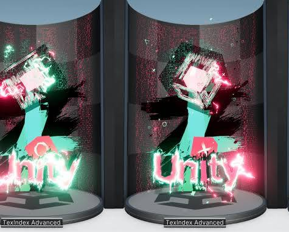
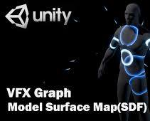

Conversation 878
DIY Pig Mask Butchering
Prompt 1 · You
diy pig mask butchering
Response 1 · Google AI Mode
It looks like your search query combines two very different concepts: the culinary process of harvesting a "pig mask" (removing the skin and meat from a pig's head for cooking) and making a DIY prop costume mask (like the pig masks seen in horror films or plays).
Below is the guide for both interpretations so you can find exactly what you need.
Option 1: Harvesting a "Pig Mask" (Butchery)
In traditional butchery, the "mask" refers to the intact skin, jowls, and snout removed from the skull in one piece. It is typically used to make head cheese, guanciale, or porchetta di testa.
- Prep the Head: Ensure the pig head is thoroughly scalded and scraped free of hair, or torched and cleaned. Wash it completely to ensure sanitation.
 YouTube·Fluty Lick Homestead +2
YouTube·Fluty Lick Homestead +2 - The Crown Cut: Place the head upright. Make a deep incision starting right behind the ears, cutting across the top of the crown down to the jawbone on both sides.
- Peel and Slice: Carefully work your knife between the skin/fat layer and the skull bone. Start at the crown and work downward toward the snout. Use short, sweeping strokes with a sharp boning knife, pulling the skin back as you cut to keep the fat intact on the mask. YouTube·Farm Hand's Companion
- Navigate the Features: Carefully cut around the eyes and ears, keeping the skin continuous. Slice through the cartilage of the snout closely against the bone so the nose remains attached to the skin.
- Free the Jowls: Continue skinning down the sides of the face to include the heavy jowl meat. Once you reach the bottom of the jaw, the entire face ("mask") will detach as a single, flat piece of skin and meat. YouTube·The Bearded Butchers
Option 2: DIY Costume Pig Mask (Crafting)
If you are looking to build a prop mask for a costume, theater play, or a horror-themed project, you can easily build one using affordable crafting materials.  Facebook +1
Facebook +1
Facebook +1A popular method uses a latex mold cast from a real or sculpted head, but the most accessible method for home builders is Paper-Mâche:  Reddit
Reddit
Reddit| Step | Action | Materials Needed |
|---|---|---|
| 1. Base Form | Inflate a balloon or cut a plastic milk jug to the size of a human head to act as your sturdy base. | Balloon, milk jug, or foil |
| 2. Add the Snout | Tape a cut section of a cardboard paper towel tube to the front of your base to create a 3D snout projection. | Paper towel tube, masking tape |
| 3. Paper-Mâche | Dip strips of newspaper into a mix of flour and water (or school glue). Layer them smoothly over the base and snout. Allow 24 hours to dry completely. | Newspaper, flour/water paste |
| 4. Cut Features | Once fully hardened, carefully cut out eye holes and nostril vents using a utility knife. | Utility knife |
| 5. Paint & Finish | Apply a base layer of pink or flesh-toned acrylic paint. Add darker details inside the nostrils and ears to create depth. | Acrylic paint, brushes |
To give you the most accurate steps, could you clarify: Are you looking to butcher an actual pig's head for cooking, or are you trying to craft a costume/horror mask that looks like a butchered pig?
Source links preserved from this response
- www.youtube.com
https://www.youtube.com/watch?v=khOGwAwk_Y0&t=108 - www.youtube.com
https://www.youtube.com/watch?v=wD7NxgSOJVw&t=315 - www.youtube.com
https://www.youtube.com/watch?v=taHGVdmmyWo - www.facebook.com
https://www.facebook.com/groups/235374963868523/posts/2363313957741269/ - www.reddit.com
https://www.reddit.com/r/Butchery/comments/1i39wdm/pig_head_mask/
Prompt 2 · You
privacy VFX keijiro graph
Response 2 · Google AI Mode
It looks like your query is fragmented, but it refers to Unity VFX Graph projects, tools, or privacy features related to the prolific open-source developer Keijiro Takahashi.
Roland Articles +1
Because "privacy" could point to a few different concepts in his ecosystem, here are the most likely matches for what you are looking for:
1. The iOS / iPhone "Privacy & Security" Setup for his AR VFX Projects
If you are trying to run one of Keijiro's cutting-edge camera or augmented reality VFX repositories—such as BibcamVfx or MetavidoVFX—you will likely encounter strict iOS privacy settings. To allow Unity to hook into the device's camera, lidar, and WebGPU backend, you must configure your device permissions manually:  GitHub
GitHub
GitHub- Open Settings on your iPhone.
- Navigate to Privacy & Security > toggle Developer Mode to ON.
- Go to Apps > Safari > Advanced > Feature Flags and enable WebGPU. GitHub
2. "Privacy Blurring" or Face-Anonymizing VFX (RealSense / Depthkit)
Keijiro is famous for his experimental work mapping depth sensors (like Intel RealSense or Depthkit) directly into Unity's Visual Effect Graph. GitHub +1
GitHub +1- In interactive installations, developers often use his repositories—like Rsvfx or DkvfxSketches—to convert a real-time video feed into abstract point clouds, voxel arrays, or holographic noise particles. YouTube·grade eterna +2
- This is frequently done for privacy compliance in public installations, as it beautifully obscures a person's actual facial features while completely preserving their volumetric motion and silhouette. Vimeo +1
3. Keijiro's "VfxGraphAssets" Library
If you are looking for custom operator nodes or subgraphs to handle complex data manipulation securely within Unity 6, HDRP, or URP, you are likely looking for his central library: VfxGraphAssets on GitHub. It provides a suite of custom operators, blocks, and HLSL code wrappers that bypass default Unity limitations. GitHub +1
GitHub +1To point you to the exact source code or setup instructions, could you clarify: Are you trying to fix a camera privacy permission issue on an iPhone/PC build, or are you looking for a specific project of his that anonymizes/obscures faces using live particle data?
Source links preserved from this response
- articles.roland.com
https://articles.roland.com/keijiro-takahashi-at-the-intersection-of-games-music-film-and-vfx/ - github.com
https://github.com/keijiro/BibcamVfx - DkvfxSketches
https://github.com/keijiro/DkvfxSketches - Rsvfx
https://github.com/keijiro/Rsvfx - www.youtube.com
https://www.youtube.com/watch?v=WLSIGWiuydo - vimeo.com
https://vimeo.com/383216987 - github.com
https://github.com/keijiro/VfxGraphAssets
Prompt 3 · You
2. and the original prompt
Response 3 · Google AI Mode
It looks like there's no response available for this search. Try asking something else.
Prompt 4 · You
answer
Response 4 · Google AI Mode
To address "2. and the original prompt" (creating a face-obscuring/anonymizing effect using live particle data combined with your first prompt regarding a DIY butchered pig mask):
You can combine Keijiro Takahashi's volumetric Unity tools with MediaPipe BlazeFace or FaceMesh pipelines to dynamically track a user's face and overlay a digital, horror-style DIY stylized "pig mask" VFX in real time. GitHub +1
GitHub +1The step-by-step implementation guide below outlines how to build this exact face-anonymizing effect in Unity's Visual Effect (VFX) Graph:
Step 1: Set Up the Tracking Pipeline
Instead of relying on heavy depth cameras, use Keijiro’s lightweight AI tracking repositories to extract face data from a standard web camera or mobile feed.
- Download and import Keijiro's BlazeFaceBarracuda package into a Unity project.
- Set up the pipeline to output the bounding box data and key coordinates (eyes, nose, mouth) of the tracked face. GitHub
Step 2: Feed the Face Data into VFX Graph
To make the effect look like a floating, fragmented mask rather than a flat image, you must convert the face coordinates into particles.
- Create a new Visual Effect Graph asset and add it to your scene.
- In your C# script that handles the
BlazeFaceoutput, pass the tracked position and scale properties directly into the VFX Graph usingvfxComponent.SetVector3andvfxComponent.SetFloat. - In the VFX Graph, create an Initialize Particle context that uses these coordinates as the center point for the birth of your particles.
Step 3: Design the "Butchered Pig Mask" Particle Mesh
To achieve the raw, horror aesthetic from your original prompt without rendering a solid 3D model, you will use point clouds or customized particle textures.
- Option A (Point Cloud Asset): If you want a fixed, ghostly mesh structure, use Keijiro's PcxEffects3 tool. You can import a 3D model of a pig mask as a point cloud asset and use the tracked face position to move and scale the entire cloud over the user's face. GitHub
- Option B (Procedural VFX Shape): Within the VFX Graph, use a Set Position (Shape: Torus or Cylinder) block modified by custom noise. Set the dimensions to mimic a rough snout shape projecting outward from the face position.
Step 4: Add Anonymizing Noise and Shading
To fully obscure the person's identity beneath the effect, use particle distortion fields:
- In the Update Particle context, add a Vector Field Force or a Turbulence block.
- Set the turbulence frequency high but keep the amplitude tightly constrained to the face boundaries. This causes the "mask" particles to twist, tear, and shift violently—resembling a glitchy, shredded meat or chaotic energy texture.
- In the Output Particle context, use a stylized shader. Set the particle colors to raw pinks, deep reds, and shadow tones. Add a slight Glow/Emission to give it a digital horror appearance.
Step 5: Configure Build Privacy (iOS Deployments)
If you build this out to run on an iPhone or iPad using WebGPU or AR capabilities (similar to Keijiro’s MetavidoVFX setup), you must unlock system privacy overrides: GitHub
GitHub- Go to your device Settings > Privacy & Security > Turn Developer Mode ON.
- If testing via browser features: Go to Apps > Safari > Advanced > Feature Flags and toggle WebGPU to ON. GitHub
Would you like me to provide the C# script snippet needed to bridge Keijiro's BlazeFace data directly over to the Unity VFX Graph properties, or do you need help structuring the nodes inside the graph editor itself?
Source links preserved from this response
- github.com
https://github.com/keijiro/BlazeFaceBarracuda - github.com
https://github.com/keijiro/FaceMeshBarracuda - github.com
https://github.com/keijiro/PcxEffects3 - MetavidoVFX
https://github.com/keijiro/SplatVFX - github.com
https://github.com/keijiro/BibcamVfx
Prompt 5 · You
generate a souvenir
Response 5 · Google AI Mode
Here’s your generated image.
Download
Here are some real-world examples of creative, high-tech, and artistic souvenirs to spark further design ideas.


Would you like to refine the visual style of this digital souvenir (e.g., making it look more cyberpunk, changing the color palette, or adding interactive UI elements), or would you prefer to generate a different concept altogether?
Prompt 6 · You
generate a souvenir of this context
Response 6 · Google AI Mode
Here’s your generated image.
Download
Here are some real-world examples of classic city skyline snow globes and cultural souvenir designs to inspire you further.
Would you like to alter the artistic style of this Amsterdam 2026 digital souvenir (for example, giving it a glitchy cyberpunk aesthetic or a classic oil painting finish), or would you prefer to embed specific holographic elements inside the dome?
Source links preserved from this response
- Snow Globe Seattle Farmers Public Fish Market With Space Needle, Pacific Place | eBay
ebay.com
https://www.ebay.com/itm/800430340549 - Customized Resin Country City Souvenir Germany Snow Globe - Country Souvenir Snow Globe and Custom Snow Globe price | Made-in-China.com
m.made-in-china.com
https://m.made-in-china.com/product/Customized-Resin-Country-City-Souvenir-Germany-Snow-Globe-1921704761.html - Las Vegas Snow Globe Skyline 3.5 Inch - Snow Globe and Decoration price | Made-in-China.com
wutongcrafts.en.made-in-china.com
https://wutongcrafts.en.made-in-china.com/product/SyYnkEmjgrVq/China-Las-Vegas-Snow-Globe-Skyline-3-5-Inch.html - 918 Snowglobe Base Royalty-Free Images, Stock Photos & Pictures | Shutterstock
shutterstock.com
https://www.shutterstock.com/search/snowglobe-base
Prompt 7 · You
embed specific holographic elements SHA256 crypto seed smart city weIRANDAAN
Response 7 · Google AI Mode
Here’s your generated image.
Download
Would you like to animate the cryptographic matrix so the SHA-256 data streams float dynamically around the smart city, or should we adjust the neon palette to match a specific corporate cyber-punk brand?